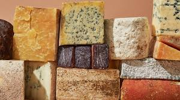

Egy legenda szerint a sajtot egy arab nomád fedezte fel. A legenda úgy szól, hogy tejjel töltött meg egy nyeregtáskát, hogy azt fogyassza az úton, ameddig keresztüllovagol a sivatagon. Több óra után lovaglás után megállt, hogy szomját oltsa, s látta, hogy a tej sápadt vizes folyadékká vált, melyben szilárd fehér darabokban vált ki a sajt. A nyeregtáska egy fiatal állat gyomrából készült, ez egy megalvasztó enzimet tartalmazott, amit renninként (alvasztóenzim) ismerünk. A tejet valójában a rennin, a forró nap és a ló vágtató mozgásának keveréke aludttejjé és savóvá választotta el.
Római sajtgyártás : A rómaiak megtanulták a sajtgyártást, és a rájuk jellemző hatékonyságukkal gyorsan művészetté fejlesztették, valamint ezt meg is jelenítették képzőművészetben is. A sajtgyártás elméleti és gyakorlati tudással késszé vált, és elért egy magas szintet. Ekkorra az érő eljárást fejlesztették és ismert volt, hogy a különféle bánásmódok és feltételek a raktározás alatt különböző ízekkel és jellemvonásokkal bíró sajtféleségeket eredményeztek. A nagyobb római házaknak volt egy különálló sajtkonyhájuk, (feltételrendszer a gyártáshoz) és olyan speciális módszer, amellyel sajtot tudtak érlelni. Nagyvárosokban a házi sajtot elvitték egy különleges központba ahol megfüstölték. Az írásos anyag világosan megmutatja, hogy a rómaiak milyen komolyan befolyásolták a sajtkészítés művészetét.